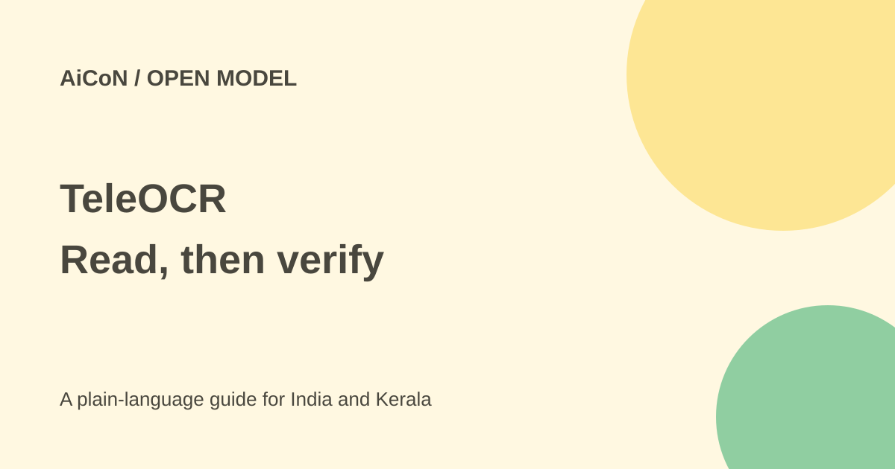

TeleOCR: local document parsing without blanket promises
TeleOCR is a small vision-language model for turning document images into structured text. Local use is possible, but accuracy, language coverage and privacy depend on the actual setup.

What is TeleOCR?
TeleOCR is presented by XingChen-AGI as a roughly 1.2-billion-parameter model for document parsing. It works on clean digital documents and camera-captured pages, including text, tables, formulas and reading order. Parsing means recovering both content and structure, rather than only finding isolated words.
The weights appeared in August 2026 under the NaviDC-OCR name. The archive post's September news was about updated results and the TeleOCR name, not a first-ever release. The current repository and model card provide code, downloads and examples for developers.
What do the benchmark scores mean?
The model card reports 96.87 overall on OmniDocBench v1.6 and results on Wild-OmniDocBench and PureDocBench. These are the maintainers' published tables, not independent tests run for this guide. The comparison also contains models that perform better on individual measures.
An overall score cannot promise every table cell, handwritten note or phone photo is correct. The archive headline's “reads any document” is too broad. A difficult scan can change an amount or merge columns even when the output looks tidy. Use your own representative documents to judge it.
Is it free and open?
Downloads are publicly available. The Hugging Face model card declares Apache 2.0, but a separate LICENSE file was not retrievable from the repository or weights path during this check. Treat the declaration as the available licensing evidence rather than claiming a complete independent licence audit.
Local computation still needs hardware and power. A hosted GPU, cloud endpoint or third-party application can charge separately. Community GGUF and llama.cpp support is linked by the maintainers; a conversion is a separate deployment path, not proof that every laptop will run well.
How to start locally
- Read the current repository and model card. Check licence terms and dependencies for the version you download.
- Use a separate environment. The repository requests Python 3.10 or later and a CUDA-enabled environment for its GPU path.
- Follow its installation instructions and install the project in editable mode only if that suits your development work.
- Download the intended weights and prepare non-sensitive test document images.
- Set the input folder, output folder, model path and inference backend in the current example.
- Run a small sample first and check text, tables, formulas and reading order against the image.
- Only then process a larger batch, keeping original files and recording failures for manual review.
The README's example model path differs from the XingChen-AGI link in the original post. Verify the real accessible model identifier before copying commands. This guide did not install the package or run inference, and does not invent a GPU-memory requirement.
Local privacy has conditions
A genuinely local inference path can keep document content on your machine. That does not make every app using TeleOCR local. Downloads contact external services, a hosted inference backend sends inputs elsewhere, and notebooks or integrations can upload documents.
Confirm where processing occurs and what logs or outputs are saved. Use redacted samples first. Do not upload Aadhaar, customer accounts or confidential workplace scans to an unapproved demo merely because the underlying weights are open.
For India and Malayalam documents
The model card's metadata explicitly lists Chinese and English. It does not establish reliable Malayalam parsing. Evaluate local scripts, mixed-language bills and Indian number formats separately. Check rupee amounts, decimal points and names manually when the result will drive an application or payment.
What changed since the original post?
This guide narrows the universal-document and automatic-privacy claims. It attributes benchmark results, records the licence-file gap, and separates local code from hosted deployments. It also warns against treating model size as a guaranteed laptop requirement.
Frequently asked questions
Does it read every document correctly?
No. Check important output against the original.
Is Malayalam confirmed?
Not by the cited language metadata.
Will my files stay local?
Only if your actual inference and surrounding workflow are local.
Sources: Model card · Repository and setup · Raw model metadata. Checked 7 October 2026.